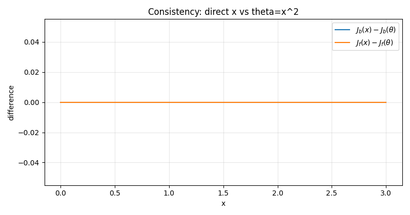
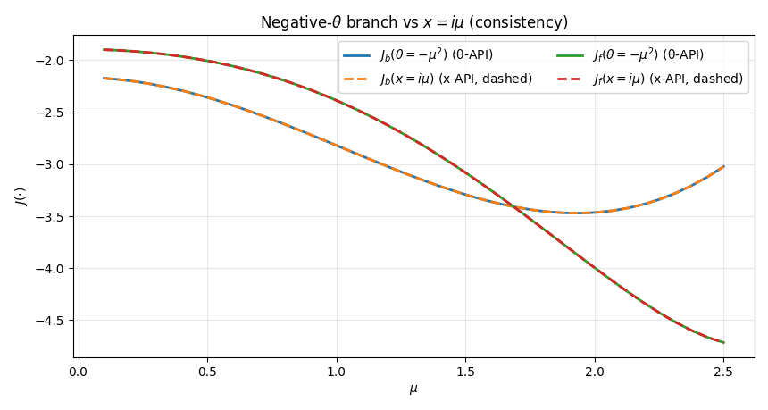
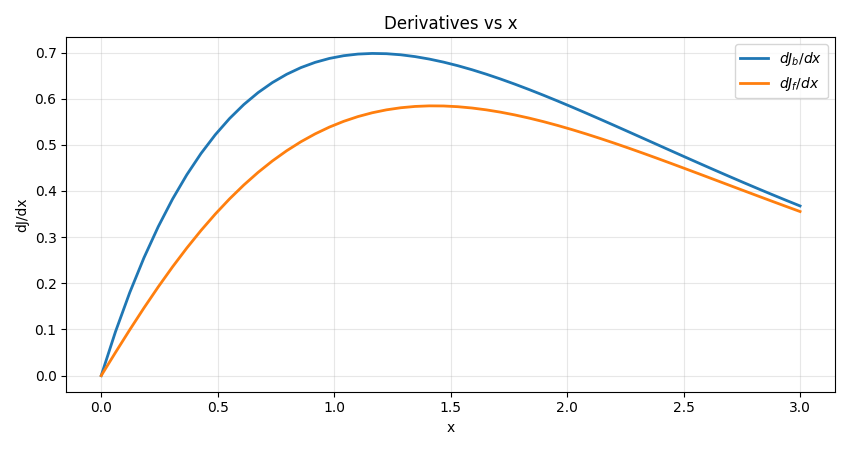
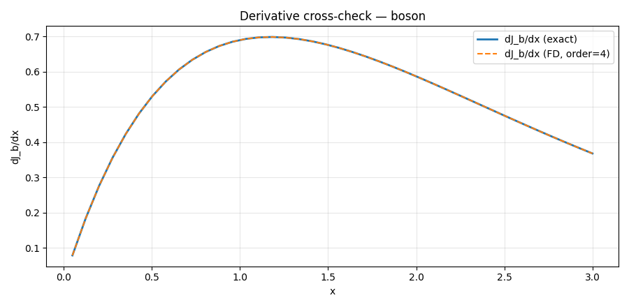
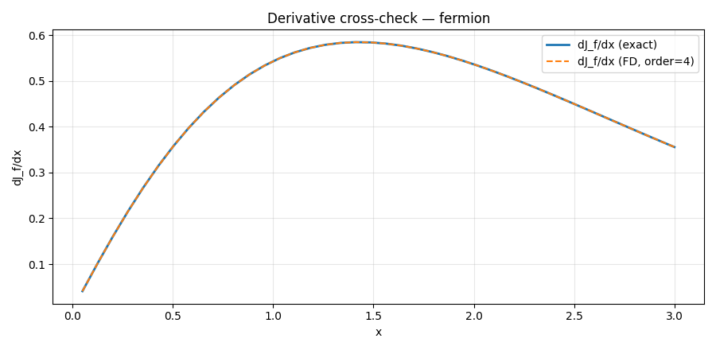
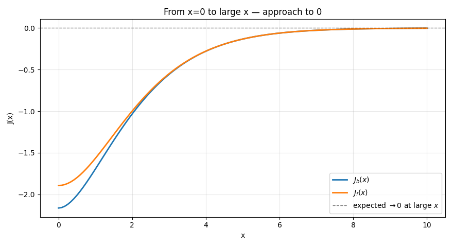
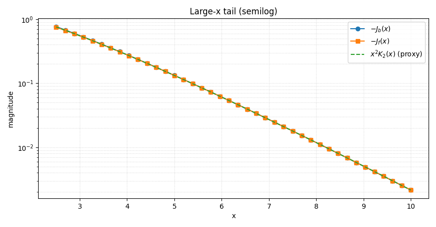
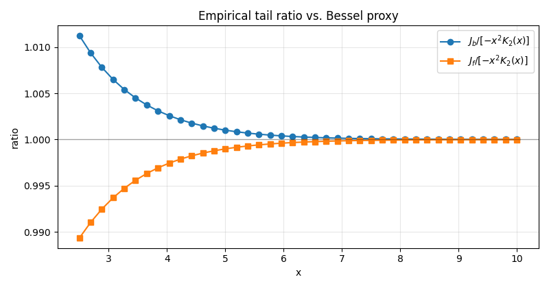
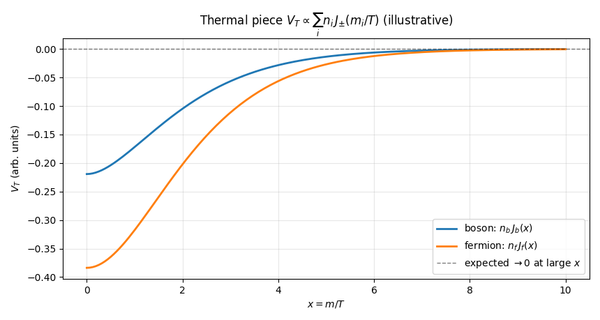

Exact Thermal Integrals (Jb, Jf)¶
_asarray¶
Signature¶
_asarray(x: ArrayLike) -> np.ndarray
Purpose¶
Convert input to a NumPy array without copying when possible (thin wrapper around np.asarray). Normalizes heterogeneous inputs (lists, tuples, scalars) into an ndarray for downstream vectorized code.
Parameters, returns and Raises¶
Parameters
x(array_like): Any object that can be interpreted as an array (e.g., list, tuple, scalar, orndarray).
Returns
np.ndarray: A NumPy view ofxifxis already anndarray; otherwise a newly allocated array.
Raises / Assumptions
- Propagates exceptions from
np.asarrayifxcannot be interpreted as an array.
Notes
- Internal helper only, used by other functions
_is_scalar¶
Signature¶
_is_scalar(x: ArrayLike) -> bool
Purpose¶
Check whether x is a scalar (Python/NumPy numeric scalar or a 0-D ndarray). Useful to preserve the contract “scalar-in → scalar-out” from legacy.
Parameters, returns and Raises¶
Parameters
x(array_like): Object to inspect.
Returns
bool:Trueifxis scalar (including 0-D arrays), otherwiseFalse.
Raises / Assumptions
- Never raises by design; if
np.ndim(x)errors for exotic objects, the function safely returnsFalse.
Notes
- Internal helper only, used by other functions
_apply_elementwise¶
Signature¶
_apply_elementwise(f: Callable[[Number], Number],x: ArrayLike,*,dtype: np.dtype = np.float64,) -> Union[Number, np.ndarray]
Purpose¶
Apply a scalar function f to x (scalar or array) element wise, preserving scalar-in → scalar-out like legacy version.
Mirrors the legacy behavior: any element that causes an exception during evaluation is mapped to NaN (instead of raising). Supports real or complex outputs via dtype.
Parameters, returns and Raises¶
Parameters
f(callable): Function of a single numeric argument returning a numeric value.x(array_like): Input value(s); scalar or array-like of any shape.dtype(np.dtype, optional): Output dtype whenxis array-like (usenp.complex128for complex results). Defaultnp.float64.
Returns
-
number | np.ndarray: -
If
xis scalar: the scalar resultf(x)(orNaN/NaN+0jon failure). - If
xis array-like: an array with the same shape asx, containing element-wise results (orNaNwhere evaluation fails).
Raises / Assumptions
- Designed not to raise for per-element failures (they become
NaN). - May propagate errors only if
dtypeis invalid or memory allocation fails.
Notes
- Preserves shape for array inputs and scalar semantics for scalar inputs.
- For complex outputs, pass
dtype=np.complex128to avoid down-casting. - Internal helper; used by other functions
_Jf_exact_scalar¶
Signature¶
_Jf_exact_scalar(x: Number) -> Number
Purpose¶
Evaluate the exact one-loop fermionic thermal integral (\(J_f(x)\)) for a scalar input (x) (real or complex),
where (\(x \equiv m/T\)) and (\(E=\sqrt{y^2+x^2}\)) is the dimensionless energy.
This scalar kernel is used internally by the vectorized public wrapper Jf_exact.
Where the formula comes from (QFT background)¶
At one loop in finite-temperature field theory, the thermal correction for fermionic modes is proportional to \((\int d^3 p \ln \big (1+e^{-E_p/T}\big))\). After factoring constants and using spherical coordinates (\(p/T \to y\)), the angular integration yields (\(4\pi\)), and the radial part becomes exactly the integral above with the weight (\(y^2\)).
Real-argument path (direct integral)¶
For real (x), the integrand is real and we integrate directly:
We use the numerically stable identity \((ln(1+e^{-E})=\mathrm{log1p} (e^{-E}))\).
Pore Complex-argument path (domain split)¶
If (x) carries an imaginary part only, then for (\(0\le y \le |x|\)) the principal branch energy becomes purely imaginary:
(E= iz) with \((z=\sqrt{|x|^2-y^2})\). In this regime,
Therefore, we split the integral at (\(a_x=|x|\)) and evaluate
so that both pieces are real valued integrands, suitable for high accuracy quadrature.
Parameters, returns and Raises¶
Parameters
x(Number): Scalar input, real or complex.
Returns
Number: The value of \((J_f(x))\). For realx, the result is real. For complexx, the value is computed via real integrands on both pieces and is real as well (principal-branch prescription).
Raises / Assumptions
- Assumes the principal square root branch. Numerical quadrature tolerances are set to
epsabs=1e-10,epsrel=1e-8,limit=200.
Notes
- This is an internal scalar kernel. Use the public
Jf_exactfor array inputs (vectorized and with dtype control). - The use of
log1pimproves robustness near (\(E\approx 0\)).
_Jb_exact_scalar¶
Signature¶
_Jb_exact_scalar(x: Number) -> Number
Purpose¶
Evaluate the exact one-loop bosonic thermal integral \((J_b(x))\) for a scalar input (x) (real or complex),
where (\(x=m/T\)) and (\(E=\sqrt{y^2+x^2}\)).
This scalar kernel is used internally by the vectorized public wrapper Jb_exact.
Where the formula comes from (QFT background)¶
For bosonic modes, the finite (T) one-loop contribution is proportional to \((\int d^3p \ln(1-e^{-E_p/T}))\). After the angular integral and rescaling (\(p/T\to y\)), we obtain the radial integral above with weight (\(y^2\)).
Real-argument path (direct integral)¶
For real (x),
We employ the stable identity \((\ln(1-e^{-E})=\mathrm{log1p}(-e^{-E}))\).
Pure Complex-argument path (domain split)¶
If (x) has an imaginary component, then for (\(0\le y \le |x|\)), (E=iz) with (\(z=\sqrt{|x|^2-y^2}\)) and
Thus, we split at (\(a_x=|x|\)) and evaluate
which again yields real integrands in both intervals.
Parameters, returns and Raises¶
Parameters
x(Number): Scalar (real or complex).
Returns
Number: The value of ($J_b(x) $). For realxthe result is real; with complexx, the split formulas ensure a real valued integral (principal branch choice).
Raises / Assumptions
- Principal square-root branch. Quadrature settings:
epsabs=1e-10,epsrel=1e-8,limit=200.
Notes
- Internal scalar kernel; the vectorized public API is
Jb_exact. log1p(-exp(-E))mitigates loss of significance near (\(E\approx 0\)) for bosons.
_Jf_exact2_scalar¶
Signature¶
_Jf_exact2_scalar(theta: Number) -> float
Purpose¶
Evaluate the exact one-loop fermionic thermal integral (J_f) as a function of the real scalar (\(\theta \equiv x^2 = (m/T)^2\)) equivalent to the functions above:
This is the scalar kernel used internally by the vectorized public wrapper Jf_exact2(theta).
Why a θ-based API (and why keep it alongside the x based one)?¶
- Physics-first variable. In finite-T QFT the natural scalar entering the thermal integrals is (\(\theta=m^2/T^2\)) (a real quantity that may be negative in symmetry-broken/tachyonic regions).
- Numerical stability. With (\(\theta\in\mathbb{R}\)) the integrand is always chosen real-valued, even for (\(\theta<0\)) (see splitting below). Quadrature is typically faster and more robust.
- Interpolation/caching. Tabulating in (\(\theta\)) is convenient for splines (next block) and reuse across scans.
- Compatibility. Remains legacy code that supplies (\(x=m/T\)) directly. Both compute the same physics when (x) is real or purely imaginary ((\(\theta=x^2\)) real).
Implementation detail: this function takes the real part of
thetainternally (th = float(np.real(theta))) to enforce (\(\theta\in\mathbb{R}\)) as used in physics.
Positive-θ branch \((\theta\ge 0)\)¶
computed directly with the numerically stable identity \((\ln(1+e^{-E})=\mathrm{log1p}(e^{-E}))\).
Negative-θ branch \((\theta<0)\) — domain split with real integrands¶
Write \((\theta=-\mu^2) ((\mu>0))\). Then
For (E=iz), (\(1+e^{-E}=2e^{-iz/2}\cos(z/2)\)) and (\(\big|1+e^{-E}\big|=2|\cos(z/2)|\)). Thus we split:
Both pieces are real, ensuring stable high-accuracy quadrature.
Parameters, returns and Raises¶
Parameters
theta(Number): Scalar; only its real part is used internally.
Returns
float: \((J_f(\theta))\) as a real number.
Raises / Assumptions
- Principal square-root branch. Quadrature tolerances are
epsabs=1e-10,epsrel=1e-8,limit=200.
Notes
- Prefer the θ API in new code (it is what the spline based approximations will use).
- For (x) real or (\(x=i\mu\)) (pure imaginary),
_Jf_exact_scalar(x)and_Jf_exact2_scalar(\theta=x^2)coincide.
_Jb_exact2_scalar¶
Signature¶
_Jb_exact2_scalar(theta: Number) -> float
Purpose¶
Evaluate the exact one-loop bosonic thermal integral (\(J_b\)) as a function of the real scalar (\(\theta \equiv x^2 = (m/T)^2\)):
This is the scalar kernel used internally by the vectorized public wrapper Jb_exact2(theta).
Why a θ based API (and why keep it alongside the x-based one)?¶
Same rationale as fermions:
- (\(\theta=m^2/T^2\)) is the natural real control variable (possibly negative).
- Splitting at (\(\theta<0\)) yields real integrands everywhere ⇒ more stable and faster quadrature.
- Ideal for spline tables and caching; x API kept for compatibility with legacy callers providing (x).
Implementation detail: only the real part of
thetais used internally.
Positive-θ branch \((\theta\ge 0)\)¶
computed via the stable \((\ln(1-e^{-E})=\mathrm{log1p}(-e^{-E}))\).
Negative-θ branch \((\theta<0)\) — domain split with real integrands¶
Let (\(\theta=-\mu^2\)) \((\mu>0)\). For (\(y<\mu\)), (E=i z) with (\(z=\sqrt{\mu^2-y^2}\)) and
Therefore,
Again, both integrands are real.
Parameters, returns and Raises¶
Parameters
theta(Number): Scalar; only its real part is used internally.
Returns
float: \((J_b(\theta))\) as a real number.
Raises / Assumptions
- Principal square-root branch. Quadrature settings as above.
Notes
- Prefer the θ-API for new code and for spline approximation.
- For (x) real or (\(x=i\mu\)),
_Jb_exact_scalar(x)and_Jb_exact2_scalar(\theta=x^2)agree.
Relationship between the x- and θ based functions¶
- If (x) is real or purely imaginary \(((x=i\mu\Rightarrow \theta=-\mu^2))\), both APIs are equivalent and yield the same physics.
- The θ-API enforces (\(\theta\in\mathbb{R}\)) and constructs real integrands in all regimes, which improves numerical behavior and matches how downstream interpolation/approximations will operate.
- The x API remains for backward compatibility with callers that already supply (\(x=m/T\)).
_dJf_exact_scalar¶
Signature¶
_dJf_exact_scalar(x: Number) -> float
Purpose¶
Compute the exact derivative \((\dfrac{dJ_f}{dx})\) for a scalar (x) with a numerically stable integrand. For fermions,
Differentiating under the integral sign¶
Under standard regularity conditions (smooth, absolutely integrable integrand), we may exchange derivative and integral:
Using
we obtain the fermionic derivative kernel
Numerical stability choices¶
- We implement ( \(n_F(E)=\dfrac{1}{e^{E}+1}\) ) as
special.expit(-E)(the logistic function), which is stable for large (E). - By parity, \((J_f(x))\) is even in (x) (i.e., \((J_f(-x)=J_f(x))\) ), hence ( $\tfrac{dJ_f}{dx}\big|_{x=0}=0 $). The function returns 0 exactly at (x=0).
- Internally we form (\(E=\sqrt{y^2+x_r^2}\)) with (\(x_r=|x|\ge 0\)) to guarantee (\(E\ge 0\)). In physical use (\(x=m/T\ge 0\)). (For explicit sign handling: \((\tfrac{dJ_f}{dx}(-x)=-\tfrac{dJ_f}{dx}(x))\) ).
Parameters, returns and Raises¶
Parameters
x(Number): Scalar (real or complex). In physical applications (\(x\in\mathbb{R}_{\ge 0}\)).
Returns
float: The real value of \((\dfrac{dJ_f}{dx})\).
Notes
- Quadrature settings:
epsabs=1e-10,epsrel=1e-8,limit=200. - Integration domain \((y\in[0,\infty))\) with stable integrand \((y^2,\dfrac{x}{E},n_F(E))\).
_dJb_exact_scalar¶
Signature¶
_dJb_exact_scalar(x: Number) -> float
Purpose¶
Compute the exact derivative \((\dfrac{dJ_b}{dx})\) for a scalar (x). For bosons,
Differentiating under the integral sign¶
Using
we obtain the bosonic derivative kernel
Numerical stability choices¶
- We implement ( \(n_B(E)=\dfrac{1}{e^{E}-1}\) ) as
1/np.expm1(E), which is stable as (\(E\to 0^+\)). - By parity, \((J_b(x))\) is even in (x) (i.e., \((J_b(-x)=J_b(x))\) ), hence \((\tfrac{dJ_b}{dx}\big|_{x=0}=0)\). The function returns 0 at (x=0).
- Internally (\(E=\sqrt{y^2+x_r^2}\)) with (\(x_r=|x|\ge 0\)), consistent with the physical case (\(x=m/T\ge 0\)). (For sign handling: ( $\tfrac{dJ_b}{dx}(-x)=-\tfrac{dJ_b}{dx}(x) $).)
Parameters, returns and Raises¶
Parameters
x(Number): Scalar (real or complex). In physical applications (\(x\in\mathbb{R}_{\ge 0}\)).
Returns
float: The real value of \((\dfrac{dJ_b}{dx})\).
Notes
- Quadrature settings:
epsabs=1e-10,epsrel=1e-8,limit=200. - Integration domain \((y\in[0,\infty))\) with stable integrand \((y^2,\dfrac{x}{E}n_B(E))\).
Jf_exact; Jf_exact2; Jb_exact; Jb_exact2; dJf_exact; dJb_exact¶
Purpose¶
These functions are vectorized, user-facing wrappers around the exact scalar kernels for the one-loop thermal integrals (\(J_b\)), (\(J_f\)) and their derivatives. They:
- preserve the legacy cosmoTransitions API (same names/behavior),
- accept scalars or arrays and apply the scalar kernels element-wise (scalar-in → scalar-out),
- offer both x-based ((\(x=m/T\))) and θ based \((\theta=x^2=m^2/T^2\in\mathbb{R})\) entry points.
Signatures¶
Jf_exact(x: ArrayLike) -> Union[Number, np.ndarray]
Jf_exact2(theta: ArrayLike) -> Union[float, np.ndarray]
Jb_exact(x: ArrayLike) -> Union[float, np.ndarray]
Jb_exact2(theta: ArrayLike) -> Union[float, np.ndarray]
dJf_exact(x: ArrayLike) -> Union[float, np.ndarray]
dJb_exact(x: ArrayLike) -> Union[float, np.ndarray]
Parameters¶
-
For x based functions (
Jf_exact,Jb_exact,dJf_exact,dJb_exact): -
x(float | complex | array-like): argument(s) (\(x=m/T\)). • Real inputs are treated asabs(x)(legacy). • Complex inputs are accepted for backward compatibility only; see Notes. -
For θ based functions (
Jf_exact2,Jb_exact2): -
theta(float | array-like): (\(\theta=x^2=m^2/T^2\)) (its real part is used). May be negative; the implementation splits the domain to keep the integrand real.
Returns¶
- Scalar if the input is scalar;
ndarraywith the same shape as the input otherwise. - On array inputs, any element that fails to evaluate returns NaN (legacy behavior preserved).
Notes (apply to all)¶
- Vectorization & semantics. All functions act element-wise on arrays and preserve shapes.
-
Numerical stability. Internally use stable forms:
-
log1p/log1p(-exp(-E))for the logs, special.expit(-E)for the Fermi factor \((1/(e^E+1))\),1/np.expm1(E)for the Bose factor \((1/(e^E-1))\).-
Branching / complex inputs.
-
For θ-API (
*_exact2): (\(\theta\in\mathbb{R}\)). If (\(\theta<0\)) the integral is split at (\(y=\sqrt{|\theta|}\)) and expressed with (\(\cos\)) / (\(\sin\)), yielding real integrands throughout. - For x-API (
*_exact): complex (x) triggers the legacy branch splitting (over (\([0,|x|]\))) to keep the integrals numerically real/stable. Physical note: a general complex (x) has no standard physical meaning here; it is supported only for backward compatibility. In physics workflows, (\(x=m/T\)) is real (or equivalently (\(\theta\)) is real). - Recommended usage. Prefer the θ based functions (
Jf_exact2,Jb_exact2) in new code (better for interpolation/splines and uniformly real integrands). Use x based names for seamless drop in replacement in legacy pipelines. - Derivatives.
dJf_exact,dJb_exactimplement the differentiated kernels:
\(\(\frac{dJ_f}{dx}=\int_0^\infty y^2\frac{x}{E}\frac{1}{e^E+1}dy\qquad \frac{dJ_b}{dx}=\int_0^\infty y^2\frac{x}{E}\frac{1}{e^E-1}dy \quad E=\sqrt{y^2+x^2}\)\)
and return 0 exactly at x==0 (removable singularity; evenness in (x)).
Exact Thermal Integrals — Examples¶
This page documents progressive sanity/consistency checks for the exact one-loop thermal integrals and their derivatives:
\(\(J_b(x)=\int_0^\infty y^2\ln\bigl(1-e^{-\sqrt{y^2+x^2}}\bigr)dy\quad
J_f(x)=\int_0^\infty -y^2\ln\bigl(1+e^{-\sqrt{y^2+x^2}}\bigr)dy\)\)
We test the public API:
Jb_exact, Jf_exact, Jb_exact2, Jf_exact2, dJb_exact, dJf_exact.
All figures below are produced by the script
tests/finiteT/Exact_Thermal_Integrals.py. see tests/finiteT/Exact_Thermal_Integrals for more
Test 1 — Small-x physics sanity: constants at (x=0) and near-zero behavior¶
What it checks
- The known limits:
-
\(\(J_b(0)=-\frac{\pi^4}{45},\qquad J_f(0)=-\frac{7\pi^4}{360}.\)\)
-
For small positive (x), both (J_b) and (J_f) increase toward 0, as mass/temperature (\(x=m/T\)) grows.
Figure
- Small-x behavior:

Console output
"""
=== Test 1: Small-x sanity (x → 0) ===
J_b(0): num=-2.164646467421e+00, expected=-2.164646467422e+00, |Δ|=1.60e-12
J_f(0): num=-1.894065658994e+00, expected=-1.894065658994e+00, |Δ|=6.66e-16
Expectation: For both bosons and fermions, J(x) starts negative and increases toward 0 as x grows.
As we can see in the image above, this expectation is met.
"""
Test 2 — Consistency: (J(x)) vs (J(\(\theta=x^2\))) for (\(x\ge 0\))¶
What it checks
- Numerical agreement between the x-API (
J*_exact) and the θ-API (J*_exact2) when (\(\theta=x^2\)) with (\(x\ge 0\)). - Differences should be at quadrature noise level.
Figure
- Direct consistency, (J(x)-J(\(\theta\))): 
Console output
"""
=== Test 2: Consistency J(x) vs J(theta=x^2) (x ≥ 0) ===
Max |J_b(x) - J_b(theta)| over grid: 0.000e+00
Max |J_f(x) - J_f(theta)| over grid: 0.000e+00
Expectation: differences ~ 0 within quadrature noise.
This expectation its valid as we can see in the image above
"""
Test 2b — Negative-(\(\theta\)) branch and imaginary (x) cross-check¶
What it checks
- For (\(\theta<0\)), compare the θ-API values (J(\(\theta=-\mu^2\))) with the x-API evaluated at (\(x=i\mu\)) (dashed). This confirms that our real, piecewise integrands for negative (\(\theta\)) match the legacy branch split for purely imaginary (x).
Figure
- (\(\theta<0\)) (solid) vs (\(x=i\mu\)) (dashed): 
Console output
"""
=== Test 2b: Negative-θ branch and imaginary-x consistency ===
Max |J_b(θ<0) - J_b(x=iμ)| over grid: 5.551e-13
Max |J_f(θ<0) - J_f(x=iμ)| over grid: 5.596e-12
Expectation: solid and dashed curves overlap within quadrature accuracy.
"""
Test 3 — Derivatives: shape and sign (\((dJ/dx \ge 0)\) for (\(x\ge 0\)))¶
What it checks
- From the derivative formulas,
\(\(\frac{dJ_f}{dx}=\int_0^\infty y^2\frac{x}{E}\frac{1}{e^E+1}dy\qquad \frac{dJ_b}{dx}=\int_0^\infty y^2\frac{x}{E}\frac{1}{e^E-1}dy\quad E=\sqrt{y^2+x^2}\)\)
we expect non negative derivatives for (\(x\ge 0\)). * Plots should show both (\(dJ_b/dx\)) and (\(dJ_f/dx\)) positive and decreasing toward 0 as (x) increases.
Figure
- Derivatives vs (x): 
Console output
"""
=== Test 3: Derivative sign/shape (dJ/dx ≥ 0 for x ≥ 0) ===
Min dJ_b/dx on grid: 0.000e+00 (expected ≥ 0)
Min dJ_f/dx on grid: 0.000e+00 (expected ≥ 0)
Expectation: derivatives are positive (curves move up toward 0). As we can see this is satisfied
"""
Test 4 — Cross-check (dJ/dx) via finite-difference gradientFunction (order=4)¶
What it checks
- Independent numerical differentiation (order-4 central differences) reproduces
dJ*_exactclosely.
Figures
-
Boson derivative cross-check: 
-
Fermion derivative cross-check: 
Console output
"""
=== Test 4: Cross-check dJ/dx using gradientFunction (order=4) ===
Max |dJ_b (FD) - dJ_b (exact)|: 1.318e-10
Max |dJ_f (FD) - dJ_f (exact)|: 1.705e-11
Expectation: order-4 finite differences should track the exact derivative closely (small max absolute error).
"""
Test 5A — Global trend: (x) from 0 to large (approach to 0)¶
What it checks
- Over a wide range (\(x\in[0,10]\)), both (\(J_b\)) and (\(J_f\)) approach 0 as (x) grows (heavier mass over temperature).
- The plot includes a (y=0) reference line.
Figure
- Global trend with (y=0) guide: 
Console output
"""
=== Test 5A: Global trend (x from 0 to large) with y=0 reference ===
Expectation: as x increases (heavier over T), both J_b and J_f approach 0 exponentially.
"""
Test 5B — Large-(x) tails (semilog) and Bessel proxy \((x^2 K_2(x))\)¶
What it checks
- On a semilog scale, (|J|) decays roughly like \((\exp(-x))\).
- The empirical proxy \((-x^2 K_2(x))\) captures the qualitative tail behavior.
Figures
-
Semilog magnitudes: 
-
Tail ratio vs proxy: 
Console output
"""
=== Test 5B: Large-x tail (semilog plots) ===
Tail check (medians):
median[ J_b / ( -x^2 K2 ) ] = 1.000
median[ J_f / ( -x^2 K2 ) ] = 1.000
Expectation: both |J| decay ~exp(-x); the Bessel proxy captures the trend qualitatively.
"""
Test 6 — Physical illustration: thermal piece \((V_T\propto \sum_i n_i,J_{\pm}(m_i/T))\)¶
What it checks
- With illustrative degeneracies (n_b, n_f) and (T=1), thermal contributions built from (\(J_b\)) and (\(J_f\)) are largest near (x=0) and vanish for (\(x\gg 1\)).
Figure
- Illustrative thermal potential piece: 
Console output
"""
# For illustration only (not a strict unit test):
T = 1.0 # set T=1 to focus on x=m/T
deg_b, deg_f = 2.0, 4.0 # example degeneracies
x_phys = np.linspace(0.0, 10.0, 160)
Vb = (T**4 / (2*np.pi**2)) * deg_b * Jb_exact(x_phys)
Vf = (T**4 / (2*np.pi**2)) * deg_f * Jf_exact(x_phys).real
=== Test 6: Thermal contribution V_T ∝ J(x) with x = m/T ===
Expectation: contributions are largest near x≈0 and vanish exponentially for x≫1.
---------- END OF TESTS: Exact Thermal Integrals ----------
"""
Reproducibility notes¶
- Quadrature tolerances used internally:
epsabs=1e-10,epsrel=1e-8,limit=200. - Small differences across machines/BLAS/SciPy versions are expected at the \((10^{-9})\)-\((10^{-7})\) level in these tests.